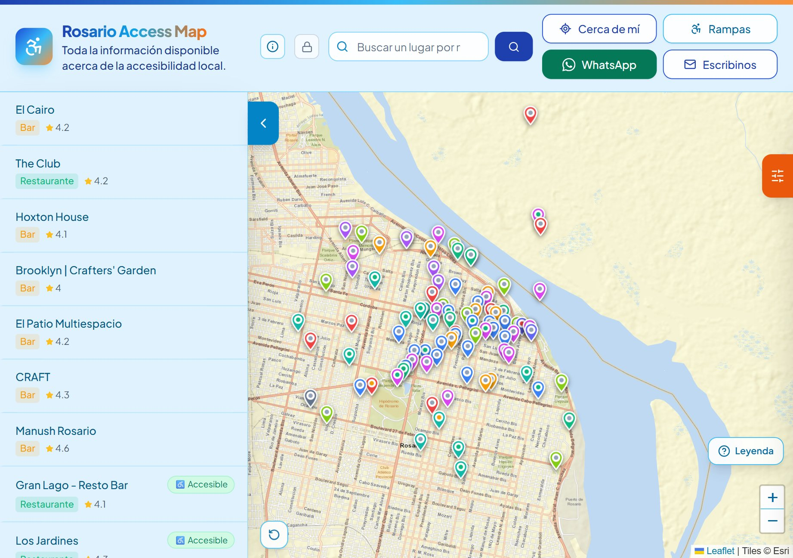
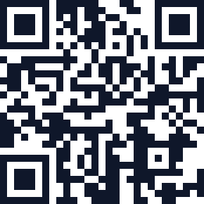

instituciones y medios
Saber si un lugar es accesible antes de salir de casa.
Un mapa gratuito y abierto que muestra qué tan accesibles son los bares, hospitales, escuelas, museos, parques y oficinas de Rosario para personas con discapacidad o movilidad reducida.
Salir sin saber si hay rampa o baño adaptado es una barrera diaria. Este mapa reúne esa información y crece con la comunidad.


Qué ofrece
Semáforo de acceso
Accesible, parcial o sin acceso en silla de ruedas, lugar por lugar.
Filtros por servicio
Baño adaptado, rampa, ascensor, braille y lengua de señas.
Cerca de mí
Los lugares ordenados por distancia desde donde estás.
Rampas y cruces
Más de 1.000 rebajes de cordón y cruces accesibles.
Cómo llego
Una ruta pensada para silla de ruedas hasta el lugar.
Accesible e instalable
Lector de pantalla, teclado y alto contraste. Se instala en el celular.
Cómo puede ayudar tu organización
Difundir
Compartí el mapa con tu comunidad: cuanta más gente lo usa, más completo queda.
Sumar datos
Cualquiera propone datos desde la app, sin cuenta. El equipo los revisa y publica.
Relevar
Referentes de confianza reciben una cuenta para cargar datos frente al lugar.
Validar
La mirada de quienes viven la accesibilidad a diario vuelve útil la información.
